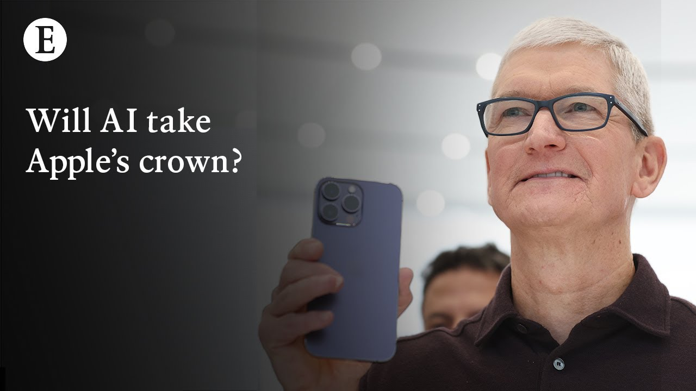

【经济学人：人工智能会夺走苹果的王冠吗？】
Summary: Apple faces challenges in AI development, regulatory issues, and court rulings threatening its App Store revenue, while users remain loyal but future innovation is uncertain.
摘要： 苹果在人工智能开发、监管问题和威胁其应用商店收入的法院裁决方面面临挑战，尽管用户保持忠诚，但未来的创新仍不确定。

⏱️ Estimated Reading Time: 17 min
📚 六级生词 📚 雅思生词 📚 托福生词 📚 专八生词 📚 SAT生词 📚 考研生词 📚 GRE生词 📚 高考生词
So tell me Alex, what happened, what kind of announcements did we get at the Worldwide Developers Conference and what's going on at Apple?
那么告诉我，Alex，发生了什么，我们在全球开发者大会上得到了哪些公告，苹果现在是什么情况？
The Worldwide Developers Conference, not a dub dub internally, WWDC, is the annual big announcement of Apple's software projects over the next year and at this one, one of your iPhone user, the big obvious thing hitting your phone in autumn will be liquid glass, the new designer's aesthetic.
全球开发者大会（内部不称为“dub dub”，而是WWDC）是苹果每年发布未来一年软件项目的重要活动，这一次，对于iPhone用户来说，秋季最明显的变化将是液态玻璃，这种新的设计师美学。
Your phone will look new for the first time since I was seven over a decade ago.
你的手机将迎来十多年来的首次全新外观，自我七岁以来首次。
But behind the scenes, the more important stuff is this is Apple's second year playing catch-up to the AI industry and it's not going so well.
但在幕后，更重要的是这是苹果在人工智能领域追赶的第二年，进展并不顺利。
Alex, as I'm sitting here on my Mac talking to you with my phone, my iPhone next to me, it seems like Apple's doing just fine.
Alex，我正坐在Mac前用iPhone和你通话，看起来苹果似乎一切正常。
So what's going wrong?
那么问题出在哪里？
Apple is doing just fine.
苹果目前表现不错。
It's still the second largest company in the world.
它仍然是全球第二大公司。
It prints money through the innovative business plan of making expensive things that it sells to consumers for cash, wild in these days of ad-supported media and harvesting data for profit.
它通过制造昂贵产品并以现金出售给消费者的创新商业模式赚钱，在这个以广告支持媒体和数据收集盈利为主的时代显得与众不同。
But the problem is there's trouble on the horizon, right?
但问题是麻烦正在逼近，对吧？
The company's AI efforts are floundering, its factories are being tariffed, regulators worldwide are turning against it, even in its home state of California.
公司在人工智能领域的努力举步维艰，工厂面临关税，全球监管机构都在反对它，甚至在其总部所在的加利福尼亚州也是如此。
It's just snatched a defeat from the jaws of victory in a court case against epic games, the developer of Fortnite, which had tried to push for Apple to open up the app store to allow rival developers to run their own services on Apple's platform.
在与《堡垒之夜》开发商Epic Games的诉讼中，苹果本已接近胜利却最终失利，Epic试图迫使苹果开放应用商店，允许竞争对手在苹果平台上运行自己的服务。
Apple actually had won eight of the nine counts in that court case and the only one it lost was a provision about whether or not it could control the communication of developers to their users.
苹果实际上赢得了该案件的九项指控中的八项，唯一败诉的是一项关于其是否能控制开发者与用户沟通的条款。
But it scurried the compliance that the court had set so badly and pissed off the judge so much that it's been hit with an incredibly punitive injunction, effectively preventing it from having any say on how developers communicate with their users, which in effect means that Apple can no longer guarantee that it collects the up to 30% tax it puts on any payments made through the app store.
但苹果在遵守法院规定方面表现极差，激怒了法官，导致其受到一项极其严厉的禁令，实际上剥夺了其对开发者与用户沟通方式的控制权，这意味着苹果无法再保证通过应用商店收取高达30%的佣金。
The app store is worth $1.3 trillion to the global economy according to Apple's own figures, which are obviously inflated to make the company's 30 billion that it takes in fees and payments seem poultry by comparison.
根据苹果自己的数据，应用商店对全球经济的价值为1.3万亿美元，这些数据显然被夸大了，相比之下公司每年300亿美元的费用和支付收入显得微不足道。
But you know that's a 30 billion annual run rate that is a jeopardy thanks to this court ruling.
但你知道，由于这项法院裁决，这300亿美元的年收入正面临风险。
That's quite a laundry list of problems.
这是一长串的问题。
Let's start with the first one you mentioned.
让我们从你提到的第一个问题开始。
You said Apple's AI is floundering.
你说苹果的人工智能进展不顺。
What do you mean by that?
你这是什么意思？
The company made a big deal about coming to AI fairly late even this time last year.
去年这个时候，苹果还大张旗鼓地表示进入人工智能领域较晚。
It branded it as Apple Intelligence and announced a raft of new AI powered features coming specifically to iPhones.
它将其命名为“Apple Intelligence”，并宣布了一系列专为iPhone推出的新AI功能。
But what happened in the following year is that a good chunk of those features simply didn't arrive in a very unusual move for the company which tends to be proud of its refusal to show off prototypes, refusal to pre-announce features.
但在接下来的一年里，这些功能中的很大一部分根本没有实现，这对这家以不展示原型、不预先宣布功能而自豪的公司来说非常不寻常。
Apple pre-announced a feature and then couldn't actually finish it.
苹果预先宣布了一项功能，却未能真正完成它。
There was a whole swath of features that were supposed to let you ask Siri to plan routes to that restaurant that was mentioned in the last message or text my mum to tell her about my meeting I've got coming up.
有一系列功能本应让你可以要求Siri规划去上条消息中提到的餐厅的路线，或发短信告诉妈妈我即将参加的会议。
And Siri simply couldn't do that.
而Siri根本无法做到这些。
It still can't.
现在仍然不能。
A year on, a whole IOS release later, Apple's failed to meet that.
一年过去了，整个iOS版本更新后，苹果仍未实现这些功能。
Yesterday's keynote didn't suggest much changes actually.
昨天的主题演讲实际上并未显示出太多变化。
Apple is still holding to its proposal that it will ship those features before the end of this year.
苹果仍坚持其提议，将在今年年底前推出这些功能。
But it hasn't announced a time frame for that.
但它尚未宣布具体时间表。
It doesn't look like they'll be coming in IOS 26 because one of the minor changes is we're getting annual numbering rather than simply incremental counts.
看起来这些功能不会出现在iOS 26中，因为其中一个较小的变化是我们将采用年度编号而非简单的增量计数。
But yeah, they are still lagging behind companies like Google that's incorporated its top of the line Gemini chatbot into its Pixel phones, let alone the pure play AI labs like I'm through a pick and open AI.
但没错，它们仍落后于已将顶级Gemini聊天机器人整合到Pixel手机中的谷歌等公司，更不用说像I'm through a pick和OpenAI这样的纯AI实验室了。
And can it catch up?
它能赶上吗？
In-house probably not.
内部研发可能不行。
You know, never say never and this is an enormously well-resourced company.
你知道，永远不要说不可能，这是一家资源极其丰富的公司。
But Apple's play has never been pure tech.
但苹果的策略从来不是纯粹的科技。
It's always been about taking stuff that is at or near commodity and refining it, perfecting it, productizing it.
它总是将处于或接近商品化的东西进行精炼、完善并产品化。
That was clearly what their plan was for AI as well.
这显然也是他们在人工智能领域的计划。
To allow the open AI's of the world to race ahead in in foundation models and to build a better set of products around commodity AI models.
让世界上的OpenAI在基础模型上领先，围绕商品化AI模型打造更好的产品。
The problem seems to be that well firstly the AI industry is moving so fast every day that if you're lagging behind the frontier you are really noticeably behind that frontier.
问题似乎在于，首先AI行业发展如此之快，如果你落后于前沿，就会明显落后。
And secondly that the nature of cutting a J.I. today is it's very unappled.
其次，当今AI的本质与苹果的风格非常不符。
These systems even when you use them from open AI, they break in weird ways.
这些系统即使你使用OpenAI的，也会以奇怪的方式出错。
They don't do what you expect.
它们不会按你的预期行事。
It's very hard to polish them into that perfectly shiny sheen that Apple likes to present its products as.
很难将它们打磨成苹果喜欢展示的那种完美闪亮的产品形象。
And it doesn't really know what to do with this with a technology that is extremely powerful and useful 95% of the time and embarrassing 5%.
它也不知道如何处理这种95%的时间极其强大有用、5%的时间令人尴尬的技术。
Consumers often talk about how devoted they are to their particular products.
消费者经常谈论他们对特定产品的忠诚度。
Are they now turning away from Apple?
他们现在是否正在远离苹果？
This is the big hope behind Apple and the reason to be confident that nothing is going to collapse anytime soon.
这是苹果背后的巨大希望，也是我们有信心认为短期内不会崩溃的原因。
Users are sticky.
用户粘性很高。
They are extremely sticky.
他们非常忠诚。
They are particularly in the US where Apple has around a 50% market share of smartphones in general and a much higher market share of the premium end of the category.
尤其在美国，苹果在智能手机市场的份额约为50%，在高端市场的份额更高。
They're not going.
他们不会离开。
They're just odd.
他们只是变得奇怪。
They are buying new iPhones.
他们仍在购买新iPhone。
Maybe every other year, rather than every year.
可能每两年一次，而不是每年一次。
This is what the actual slow motion collapse of Apple will look like.
这就是苹果实际缓慢崩溃的样子。
It will be less frequent updates, but they're not switching away in any large numbers.
更新频率会降低，但他们不会大规模转向其他品牌。
Instead, the fear is that Apple will be lose its footing in future product categories.
相反，人们担心苹果将在未来的产品类别中失去立足点。
That if an increasing chunk of what you do on your iPhone is just open the Chatchee BT app and then work from there, that you're not going to care so much in three or four years time about where your next phone comes from because your phone is just the platform for that app.
如果你在iPhone上做的事情越来越多只是打开Chatchee BT应用并在那里工作，那么三四年后你将不太关心下一部手机来自哪里，因为手机只是该应用的平台。
In the really long-term future, Apple is clearly terrified about the prospect of AI native hardware of the sort that smaller companies like Rabbit AI have already released, that OpenAI is working on with Johnny I, former Apple Chief Product Designer, a world where you may still have a phone, but where your most expensive, most valued piece of consumer technology is a headset at fancy headphones and maybe even just a badge on your lapel, that is connected to an AI chatbot and like the film Her, lives with you all the time.
在真正的长期未来，苹果显然对像Rabbit AI这样的小公司已经发布的AI原生硬件前景感到恐惧，OpenAI正与前苹果首席产品设计师Jony Ive合作开发，在那个世界里你可能仍有手机，但你最昂贵、最有价值的消费技术产品是一副高端耳机，甚至只是别在衣领上的徽章，连接着AI聊天机器人，就像电影《她》中那样，一直陪伴着你。
That's a world where Apple just stops being important and gets commodified away.
在那个世界里，苹果将不再重要并被商品化淘汰。
And what does all of this mean for Apple internally and particularly the boss, Tim Cook?
这一切对苹果内部，尤其是老板蒂姆·库克意味着什么？
It's hard to say, Tim Cook lives in the shadow of Steve Jobs, right, as any Apple Chief Executive for the next century will.
很难说，蒂姆·库克生活在史蒂夫·乔布斯的阴影下，就像未来一个世纪的任何苹果CEO都会那样。
But the man has left his mark on that company.
但这个人已经在这家公司留下了自己的印记。
He was under Steve Jobs, he was the logistics guy and it's boring but hammering away at things like the amount of inventory Apple has warehouseed, the number of days between a phone rolling off the product line in China and arriving on store shelves in California, the actually concentration of Apple product construction in a few companies so that Apple didn't need to have this massive wide spread of suppliers, those are all things that have really contributed to the company, becoming and remaining as profitable as it is.
在史蒂夫·乔布斯手下，他是负责物流的人，虽然无聊，但他致力于减少苹果库存量、缩短中国生产线到加州货架的时间、将苹果产品制造集中在少数公司以避免供应商分散，这些都真正帮助公司保持高利润。
But they might not be the skills that Apple needs to succeed over the next decade.
但这些可能不是苹果未来十年成功所需的技能。
You know, Tim Cook made Apple utterly reliant on China.
你知道，蒂姆·库克让苹果完全依赖中国。
And at least for the next four years, that's going to be incredibly difficult to untangle.
至少在接下来的四年里，这将非常难以摆脱。
The company won't be able to untangle it before the end of Donald Trump's tenure unless something really surprising happens.
除非发生真正令人惊讶的事情，否则公司无法在唐纳德·特朗普任期结束前解决这个问题。
Which means that it now faces this decision of does it try to untangle it?
这意味着它现在面临是否尝试摆脱依赖的决定？
How far does it go?
要走多远？
Does it set itself a new course that might be irrelevant if things return to normalcy in America in the future?
它是否设定一条新路线，如果未来美国恢复正常，这条路线可能无关紧要？
It would be very expensive to do either of those options.
这两种选择都将非常昂贵。
And Tim Cook, being a logistics guy is not a visionary product person.
而蒂姆·库克作为物流专家，并不是一个有远见的产品人。
Apple has launched successful lines under Tim Cook, right?
苹果在蒂姆·库克领导下推出了成功的产品线，对吧？
AirPods are a rounding error in Apple's own revenue but for any other company, they would be the most profitable thing they make.
AirPods在苹果自己的收入中微不足道，但对任何其他公司来说，它们将是最赚钱的产品。
The Apple Watch has done very well.
Apple Watch表现非常出色。
All of these things in a very Apple way were launched to size shoulder shrugs and have grown into behemoths in their own right.
所有这些都以典型的苹果方式推出时反响平平，但已成长为各自领域的巨头。
The Vision Pro, Cook's latest, big product launch hasn't gone quite so well.
Vision Pro作为库克最新的大型产品发布，进展并不顺利。
But who knows, maybe if that large mixed reality headset can shrink and its price tag can significantly shrink from the two and a half thousand dollars it sold at right now.
但谁知道呢，也许如果这款大型混合现实头显能缩小尺寸，价格能从现在的2500美元大幅下降。
It could be a future product.
它可能成为未来的产品。
But AI seems different from from these shiny hardware things that Apple and Cook have succeeded in and it may be that succeeding there requires a different sort of person at the top.
但AI似乎与苹果和库克成功的这些闪亮硬件不同，在那里成功可能需要不同类型的领导者。
And what's your prediction?
你的预测是什么？
Will that happen?
这会实现吗？
I don't think Cook's going unless Cook wants to go but he's had a long run of success.
我认为库克不会离开，除非他自己想走，但他已经取得了长期的成功。
One of the big questions on the horizon is what happens in the fallout from this lawsuit with Epic because it's not just that Apple was slapped with this punitive injunction preventing it from controlling cons with developers.
未来的一个大问题是与Epic的诉讼余波会如何发展，因为这不仅仅是苹果受到禁令阻止其控制开发者沟通的问题。
It also had some members of staff referred for criminal contempt.
一些员工还被指控刑事藐视法庭。
The judge was really, really pissed off at how Apple had described its own internal communications somewhat differently from what they then turned out to be in the discovery process.
法官对苹果在描述内部通讯时与发现程序中实际内容不符感到非常愤怒。
Cook is involved in those communications and I think if there is a single action that could in parallel him it would be a conversation that he was cc'd in and engaged in resulting in one of his luteinets facing criminal charges.
库克参与了这些通讯，我认为如果有一件事可能影响他，那就是他被抄送并参与的对话导致他的副手面临刑事指控。
That would be a big deal.
那将是一件大事。
We're not there yet but I would be more concerned about him Cook than I have been anytime in the last 15 years.
我们还没到那一步，但我对库克的担忧比过去15年任何时候都要多。
Alex thank you so much for talking to me.
Alex，非常感谢你和我交谈。
Thanks for having me.
谢谢邀请我。